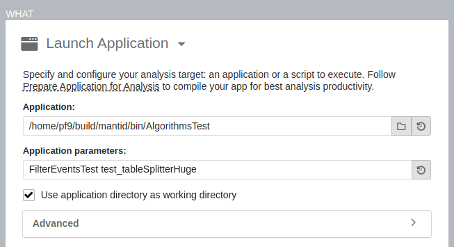

Note
These tools generally require sudo permissions to configure the system to allow them to get information.
Profiling with perf#
Perf is a tool designed for use with the linux kernel, but can be used to profile user apps as well. It is available on all linuxes, but requries root permission to enable. Much of this information was originally gained from Nick Tompson’s Performance Tuning Tutorail held at Oak Ridge National Laboratory.
Note
perf is a sampling based performance tool. This means the results are percentages rather than absolute times. However, many visualizations will associate times as well. Disk access issues are almost completely invisible to perf-based tools.
Install and configure#
To install perf on ubuntu one needs (this is inspired from here)
sudo apt install linux-tools-common
sudo apt install linux-tools-generic
sudo apt install linux-tools-`uname -r`
the last command gets the kernel modules specific to your kernel.
The final step of configuration allows for getting more information from perf traces. Any debug symbols that are found will aid in understanding the output.
#!/bin/bash
# Taken from Milian Wolf's talk "Linux perf for Qt developers"
sudo mount -o remount,mode=755 /sys/kernel/debug
sudo mount -o remount,mode=755 /sys/kernel/debug/tracing
echo "0" | sudo tee /proc/sys/kernel/kptr_restrict
echo "-1" | sudo tee /proc/sys/kernel/perf_event_paranoid
sudo chown `whoami` /sys/kernel/debug/tracing/uprobe_events
sudo chmod a+rw /sys/kernel/debug/tracing/uprobe_events
Python 3.12 will have native support for perf.
Running perf#
To profile a single test (this starts with time to see how long the overall test takes)
time perf record -g ./bin/AlgorithmsTest FilterEventsTest
The report can be viewed in a couple of ways. Using the curses-based tool
perf report --no-children -s dso,sym,srcline
The report can also be viewed FlameGraph which generates an .svg that can be viewed in a web browser
perf script | ~/code/FlameGraph/stackcollapse-perf.pl | ~/code/FlameGraph/flamegraph.pl > flame.svg
Profiling with Intel’s VTune#
Intel’s VTune profiler (download link and install instructions) is part of the one-api suite of software that is available for open source projects. This is part of the same suite that provides TBB (threaded building blocks) that are used in mantid. After installing, one must configure (these instructions are for ubuntu) using the command
sudo sysctl -w kernel.yama.ptrace_scope=0
This needs to be done at every system reboot, but can be configured in sysctl to be a permanent option as well.
Finally, the environment settings for vtune are in /opt/intel/oneapi/vtune/latest/vtune-vars.sh and the gui can be started using vtune-gui.
From the welcome screen, you will want to “Configure Analysis” (the play button).

This example takes advantage of how cxxtestgen works by running the command
bin/AlgorithmsTest FilterEventsTest test_tableSplitterHuge
which runs The test_tableSplitterHuge test of the FilterEventsTest suite, in the AlgorithmsTest binary.
It is suggested that one selects “User-Mode Sampling” to avoid seeing kernel methods and get the flame graph visualization.
Once the analysis is completed, you will see the summary.
It is recommended that you start with the “Flame Graph” and “Top-down Tree” visualizations first.